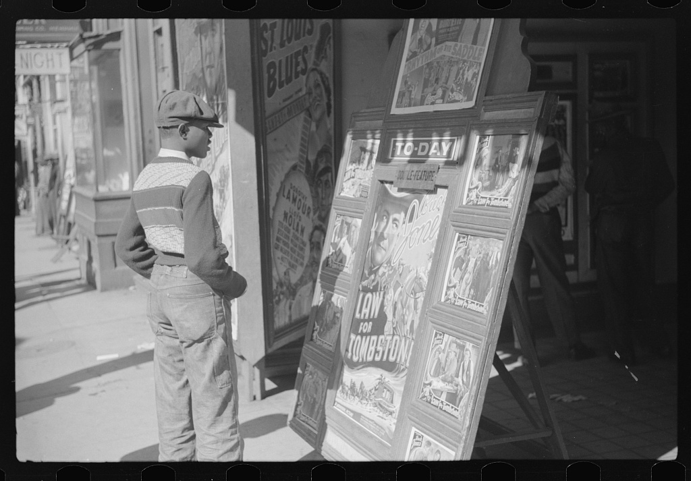

The Inside Dollar
Instrument: the deed to the theater
The inside dollar had its own infrastructure before it had a name. Sherman Dudley's chain of more than twenty Black-owned or Black-operated theaters became the basis of TOBA in 1920, which at its peak booked more than eighty houses. Only about a third were Black-owned; its president and chief booker were white; it paid less than white vaudeville and performers covered their own travel. They called it "Tough on Black Artists."1
FactBessie Smith at the top is reported at $2,000 a week in her own rail car (the ledger behind it not located); by 1933 she recorded for a flat $37.50 a side. TOBA collapsed in 1930 when Dudley sold his theaters to a cinema company.1 InferenceThe first Black-controlled booking capital exited to white film exhibitors. That is the circuit's first recorded exit, and the pattern every later chapter repeats.
| Room | City | Owner | What the record shows | Tier |
|---|
FactThe connective tissue was a 25-cent pamphlet. The Negro Motorist Green Book (1936 to 1966) started at ten pages, ran past eighty by 1949, was distributed through Esso stations, and listed thousands of Black lodgings by the early 1940s. Its circulation is disputed by two orders of magnitude (15,000 a year by one account, two million copies in 1962 by another), so this page uses neither number. It stopped publishing after the Civil Rights Act of 1964, because the economy it mapped had dissolved.8
The Green Book router
A band's travel dollar in 1949, routed by the pamphlet. Toggle it off and watch where the same dollar goes.
Where ownership was Black, the money recirculated. Where the largest rooms were white-owned, the circuit's biggest gates paid Black wages and white dividends.Inference · the inside dollar was real, closed, and small
FactAnd the Black-owned assets rarely compounded: Dudley sold out in 1930, the Dunbar went white in the Depression, Denver Ferguson was bankrupt by 1953, the Apollo stayed white-owned until Percy Sutton's group bought it in 1981.2, 5